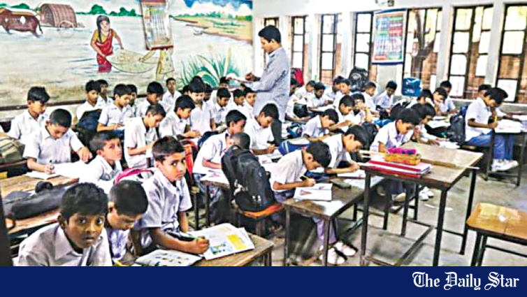
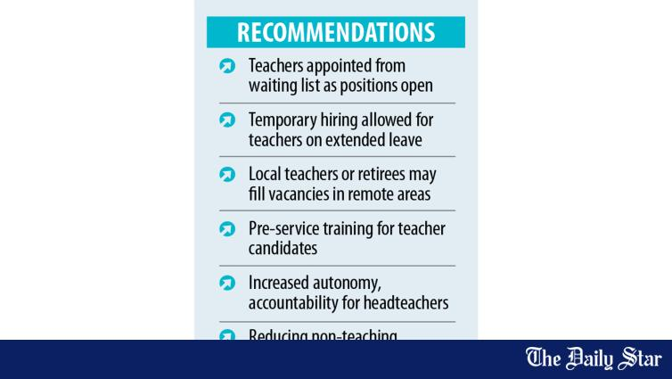
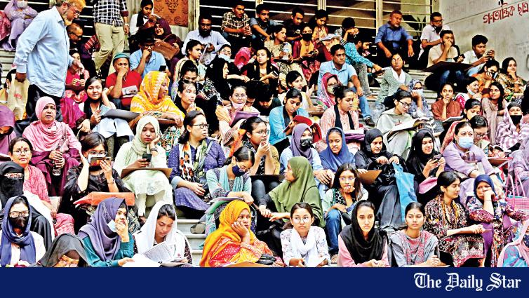

Pry teacher recruitment: Selected, yet still waiting
Selected applicants have been waging protests since April for quick completion of the appointment process.
Staffing gaps, appointments and what shortages mean inside classrooms.
Selected applicants have been waging protests since April for quick completion of the appointment process.

Government primary schools across Bangladesh are struggling to keep lessons on track as headteacher posts remain vacant in more than half of the institutions while thousands of assistant-teacher positions also remain unfilled, putting extra pressure on teachers and disrupting classes.
Bangladesh’s technical education sector is facing a slow-burning crisis, shaped by a severe shortage of teachers, poor infrastructure, and steadily declining student interest.

The government’s advisory committee on primary education reform has proposed a new system for teacher recruitment.

Twenty-two public universities, who held cluster admission tests for the 2021-22 academic year, could not start classes on time due to lengthy migration of freshers.
The authorities of Mawlana Bhasani Science and Technology University (MBSTU) in Tangail appointed four teachers against two vacant positions, ignoring the recruitment circular and recommendations of academic planning committees.